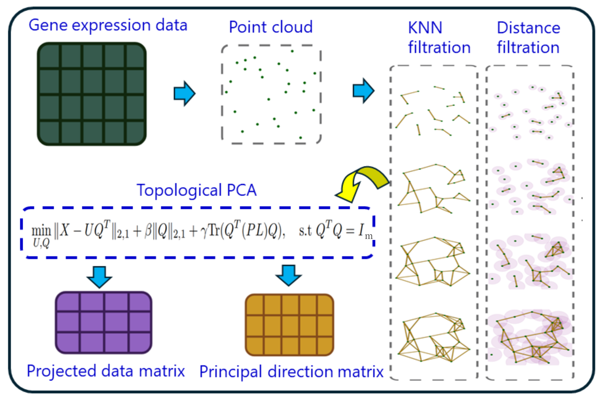
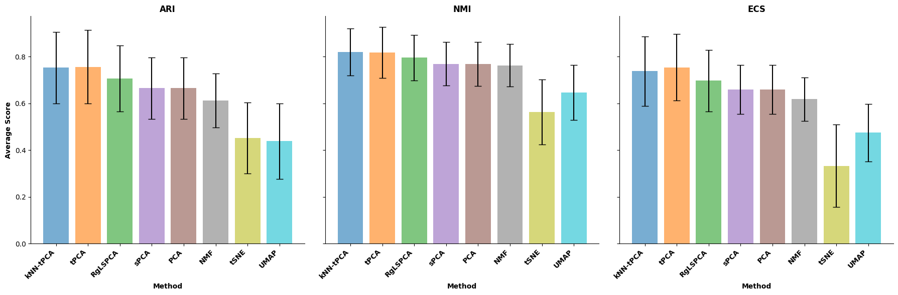
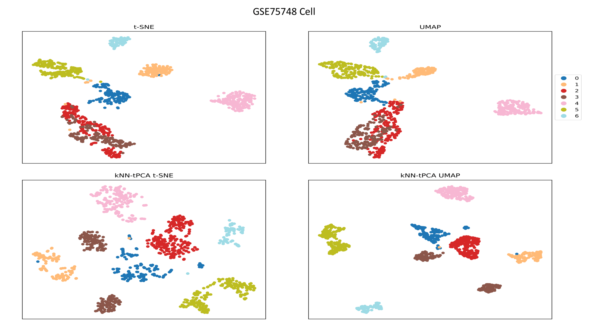

This is a brief description of tPCA, a Persistent Laplacian regularized multiscale non-linear PCA, specifically designed for single-cell RNAseq data, though certainly applicable to dimensionality reduction in other fields.
Topological PCA builds upon traditional PCA through the incorporation of Laplacian Eigenmaps (\( \text{Tr}(Q^TLQ) \)) and Sparsity Control (\( \|Q\|_{2,1} \)) terms in the objective function:
$$ \min_{U,Q}\|X - UQ^T\|_{2,1} + \beta\|Q\|_{2,1} + \gamma \text{Tr}(Q^T(PL)Q), \quad \text{s.t } Q^TQ = I_m $$
Additionally, inspired by persistent homology and the recent innovations of persistent Laplacians, we perform kNN-induced filtration to generate a sequence of subgraphs representing multiple scales of cell-cell interactions in the gene expression space. The corresponding graph Laplacians at each scale of connectivity are summed over to produce an Accumulated Spectral Graph, denoted PL. Extensive benchmarking has demonstrated that tPCA provides state-of-the-art results for dimensionality reduction prior to cell type clustering and classification.
